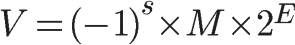

浮点数的二进制表示
作者：jicanmeng
时间：2014年06月19日
今天看了阮一峰老师写的浮点数的二进制表示，感觉写的非常好。摘抄要点如下：
根据国际标准IEEE 754，任意一个二进制浮点数V可以表示成下面的形式：

- (-1)^s表示符号位，当s=0，V为正数；当s=1，V为负数。
- M表示有效数字，大于等于1，小于2。
- 2^E表示指数位。
举例来说，十进制的5.0，写成二进制是101.0，相当于1.01×2^2。那么，按照上面V的格式，可以得出s=0，M=1.01，E=2。
十进制的-5.0，写成二进制是-101.0，相当于-1.01×2^2。那么，s=1，M=1.01，E=2。
IEEE 754规定，对于32位的浮点数，最高的1位是符号位s，接着的8位是指数E，剩下的23位为有效数字M。
对于64位的浮点数，最高的1位是符号位S，接着的11位是指数E，剩下的52位为有效数字M。

IEEE 754对有效数字M和指数E，还有一些特别规定。
前面说过，1≤M<2，也就是说，M可以写成1.xxxxxx的形式，其中xxxxxx表示小数部分。IEEE 754规定，在计算机内部保存M时，默认这个数的第一位总是1，因此可以被舍去，只保存后面的xxxxxx部分。比如保存1.01的时候，只保存01，等到读取的时候，再把第一位的1加上去。这样做的目的，是节省1位有效数字。以32位浮点数为例，留给M只有23位，将第一位的1舍去以后，等于可以保存24位有效数字。
至于指数E，情况就比较复杂。
首先，E为一个无符号整数（unsigned int）。这意味着，如果E为8位，它的取值范围为0~255；如果E为11位，它的取值范围为0~2047。但是，我们知道，科学计数法中的E是可以出现负数的，所以IEEE 754规定，E的真实值必须再减去一个中间数，对于8位的E，这个中间数是127；对于11位的E，这个中间数是1023。
比如，2^10的E是10，所以保存成32位浮点数时，必须保存成10+127=137，即10001001。
然后，指数E还可以再分成三种情况：
- E不全为0或不全为1。这时，浮点数就采用上面的规则表示，即指数E的计算值减去127（或1023），得到真实值，再将有效数字M前加上第一位的1。
- E全为0。这时，浮点数的指数E等于1-127（或者1-1023），有效数字M不再加上第一位的1，而是还原为0.xxxxxx的小数。这样做是为了表示±0，以及接近于0的很小的数字。
- E全为1。这时，如果有效数字M全为0，表示±无穷大（正负取决于符号位s）；如果有效数字M不全为0，表示这个数不是一个数（NaN）。

只看还不行，我又实践了一下，以下是实践的情况。
程序如下:
#include <stdio.h>
int main(void){
int num=9;
float* pFloat=#
printf("sizeof(int) is %d, sizeof(float) is %d\n",
sizeof(int), sizeof(float));
printf("value of num is %d\n",num);
printf("value of *pFloat is %f\n",*pFloat);
*pFloat=9.0;
printf("value of num is %d\n",num);
printf("value of *pFloat is %f\n",*pFloat);
return 0;
}
使用gdb调试结果如下:
[jicanmeng@andy tmp]$ gcc -g float.c -o float
float.c: In function ‘main’:
float.c:4: warning: initialization from incompatible pointer type
[jicanmeng@andy tmp]$ ./float
sizeof(int) is 4, sizeof(float) is 4
value of num is 9
value of *pFloat is 0.000000
value of num is 1091567616
value of *pFloat is 9.000000
[jicanmeng@andy tmp]$ gdb float
GNU gdb (GDB) Red Hat Enterprise Linux (7.2-60.el6_4.1)
Copyright (C) 2010 Free Software Foundation, Inc.
License GPLv3+: GNU GPL version 3 or later
This is free software: you are free to change and redistribute it.
There is NO WARRANTY, to the extent permitted by law. Type "show copying"
and "show warranty" for details.
This GDB was configured as "x86_64-redhat-linux-gnu".
For bug reporting instructions, please see:
...
Reading symbols from /home/jicanmeng/Desktop/tmp/float...done.
(gdb) break float.c:10
Breakpoint 1 at 0x40052e: file float.c, line 10.
(gdb) run
Starting program: /home/jicanmeng/Desktop/tmp/float
sizeof(int) is 4, sizeof(float) is 4
value of num is 9
value of *pFloat is 0.000000
Breakpoint 1, main () at float.c:10
10 *pFloat=9.0;
(gdb) print num
$1 = 9
(gdb) print &num
$2 = (int *) 0x7fffffffe0e4
(gdb) x/4tb 0x7fffffffe0e4
0x7fffffffe0e4: 00001001 00000000 00000000 00000000
(gdb) step
11 printf("value of num is %d\n",num);
(gdb) x/4tb 0x7fffffffe0e4
0x7fffffffe0e4: 00000000 00000000 00010000 01000001
(gdb) continue
Continuing.
value of num is 1091567616
value of *pFloat is 9.000000
Program exited normally.
(gdb) q
[jicanmeng@andy tmp]$ 从gdb的调试结果中可以看到，和阮一峰老师说的完全相同。当赋值9.0时，四个字节从高到底分别为01000001，00010000，00000000，00000000。红色的一个bit表示符号位，是0；绿色的8个bit表示指数，为3+127=130；蓝色的23个bit表示有效数字，为1.001。
其中x/4tb 0x7fffffffe0e4表示查看从0x7fffffffe0e4地址开始的4个字节的内容。我们可以通过help x命令来查看x命令的用法。